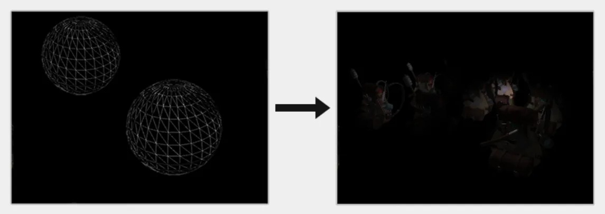

RealTime-Rendering13-DeferredShading
Deferred Shading
Combining deferred rendering with forward rendering
- 延迟渲染 GBufferPass + lightingPass
- 2.将zBuffer通过blitFrameBuffer拷贝到新的FBO
- 基于deferred Shading生成的zBuffer执行前向渲染
1 | GBufferPass(); |
A larger number of lights
通常情况下，当我们渲染一个复杂光照场景下的片段着色器时，我们会计算场景中每一个光源的贡献，不管它们离这个片段有多远。很大一部分的光源根本就不会到达这个片段，所以为什么我们还要浪费这么多光照运算呢？
隐藏在光体积背后的核心思想就是计算光源的半径，或是体积，也就是光能够到达片段的范围。由于大部分光源都使用了某种形式的衰减(Attenuation)，我们可以用它来计算光源能够到达的最远距离，或者说是半径。接下来只需要对那些在一个或多个光体积内的片段进行繁重的光照运算就行了。这可以给我们省下来很可观的计算量，因为我们现在只在需要的情况下计算光照。
这个方法的难点就是需要计算出一个光源光体积的大小，或者是半径。
1 | float constant = 1.0; |
1 | struct Light { |
上面那个片段着色器在实际情况下不能真正地工作，并且它只演示了我们可以不知怎样能使用光体积减少光照运算。然而事实上，你的GPU和GLSL并不擅长优化循环和分支。这一缺陷的原因是GPU中着色器的运行是高度并行的，大部分的架构要求对于一个大的线程集合，GPU需要对它运行完全一样的着色器代码从而获得高效率。这通常意味着一个着色器运行时总是执行一个if语句所有的分支从而保证着色器运行都是一样的，这使得我们之前的半径检测优化完全变得无用，我们仍然在对所有光源计算光照！
使用光体积更好的方法是渲染一个实际的球体，并根据光体积的半径缩放。这些球的中心放置在光源的位置，由于它是根据光体积半径缩放的，这个球体正好覆盖了光的可视体积。这就是我们的技巧：我们使用大体相同的延迟片段着色器来渲染球体。因为球体产生了完全匹配于受影响像素的着色器调用，我们只渲染了受影响的像素而跳过其它的像素。下面这幅图展示了这一技巧：
